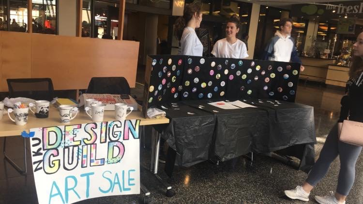
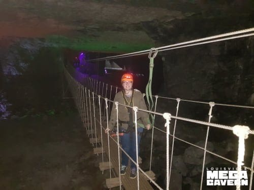

About Me
Born and raised in Louisville, KY. I came to NKU in 2017 to study Visual Communication Design BFA Major with minors in Honors and Environmental Studies. I seek this combination of studies because I wish to promote health and diversity of our local and global community. Each individual’s sense of creation mixed with their unique experiences make each one a vital part of our community. Moving forward in the RA role, I seek to continue encouraging creativity and diversity in our community as it feeds individual’s success through exposure.
Leadership
I find myself thriving in situations when my role depends on my outside independent work. I have been the elected President on the Design Guild on campus for 2 years now. The Guild prides itself on being a collection of creatives supporting creatives and we seek to supply plenty of experience growing opportunities for our members through volunteering, design firm tours, paid design community opportunities, and museum trips.
I am also a member of Leadership Mentors. During my second year with them, I served as their Vice President of External Affairs, meaning I curated and manage their social media presence. This role was mostly independent as I had to create, plan, and post all the materials on my own. Other leadership roles I have held over the years include Victor Guide, leading the painting of a mural in Donatos/Whit’s Restaurant, and training new employees at Xscape Theatres.

Hobbies
From trying new cooking techniques, to playing video games I love spending my free time bettering myself and mentally relaxing. As someone focused on living sustainability, I am always on the lookout for creative ways to reuse what I have. I love trying new activities all the time, like ziplining and snowtubing.
